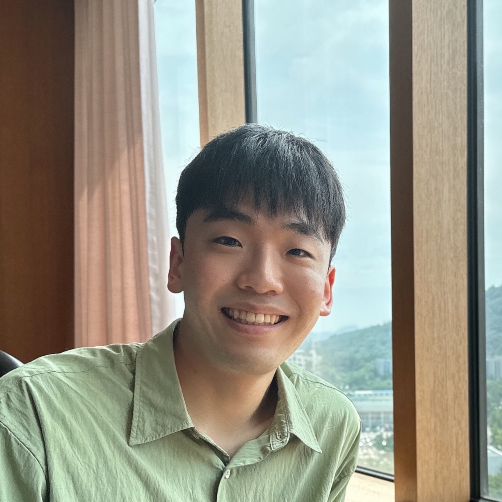
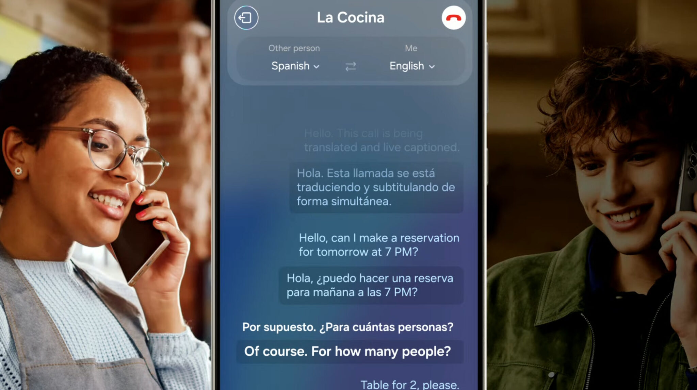
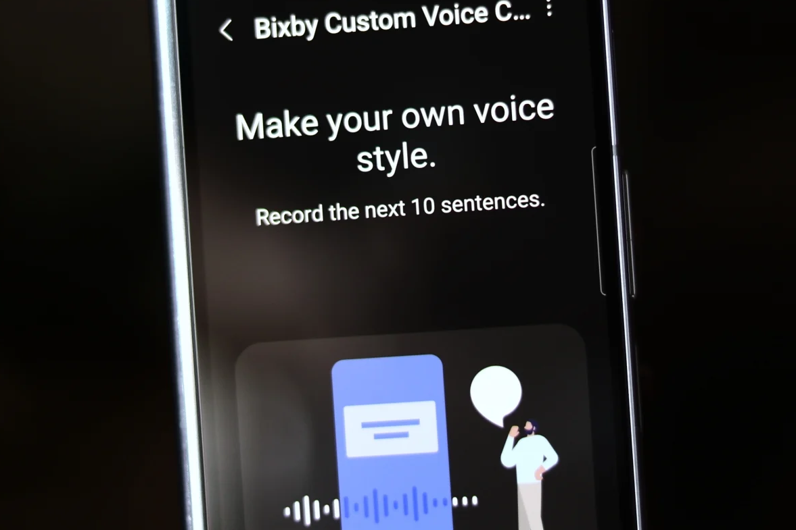

jb82 [at] illinois [dot] edu
I am a PhD student in the Computer Science (CS)
Department at the University of Illinois Urbana-Champaign,
advised by Prof. Minje Kim and Prof. Paris Smaragdis. My current research
interests include speech and audio representation learning, as well as data augmentation methods
for low-resource and underrepresented domains in speech and audio.
In the summer of 2025, I had the privilege of working as a Research Scientist
Intern
on the Meta Superintelligence Lab. My project
focused on enhancing the
understanding
and
generation capabilities of full-duplex and multimodal (speech and text) large language models.
Previously I worked as a speech AI researcher at Samsung
Research, where my main research topics included personalized and zero-shot on-device
TTS systems. I am proud to have contributed to the TTS systems integrated in the Galaxy S24.
Before that, I was at NCSOFT, a game company,
where I primarily
studied expressive TTS and prosody controllable TTS systems.
I earned my MS in Electrical Engineering from KAIST,
where I was advised by Prof. Daeshik Kim in the BREIL lab, and my
BS in Electrical and Electronic Engineering
from Yonsei University.
Below shows my projects, publications, invited talks, and academic services. Please refere to my CV for further details.

*: Equal Contribution
Click each project to see demos and further information.

I contributed to the research and development of an on-device TTS system in eight different languages, which is included as a Live Translation feature and introduced as a main AI feature in the Galaxy S24. My contribution involved enhancing the model architecture and achieving a high-quality TTS system that supports various languages with a reduced model size.

I contributed to the research and development of an on-device personalized TTS system, which was integrated into Samsung Galaxy Bixby's Custom Voice Creation and utilized within Bixby Text-call functionality. This system can create a personalized TTS system by fine-tuning the TTS directly on the user's device with just 10 utterances.
I conducted research and developed a TTS system that is capable of controlling the prosody of speech in a fine-grained level. With this system, users were able to modify the speech to have desired prosody. This system is released as an in-company web service and was widely used to make guide videos of NCSOFT's game.
I contributed to the research and development of a multi-speaker TTS system replicating the voices of numerous K-pop artists, approximately 100 in total, within a single TTS system. This TTS system was used in "UNIVERSE" service, which is a K-pop fan community platform.
I researched and developed an expressive TTS system that can generate speech with dynamic expressions suitable for diverse baseball situations. I published several demos on NCSOFT's official blog and news articles. Kindly recommend clicking this project to see the demo videos.